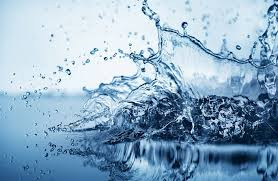

Autor: Štěpán Prokop | Datum: 24. března 2025
Hydratace hraje klíčovou roli při cvičení. Správný pitný režim pomáhá udržovat výkonnost, zlepšuje regeneraci a zabraňuje únavě.
Během cvičení byste měli vypít alespoň 0,5 litru vody za hodinu. Po intenzivním tréninku může být potřeba vyšší.
Správná hydratace je klíčem k lepším výsledkům a rychlejší regeneraci. Nezapomínejte na ni!